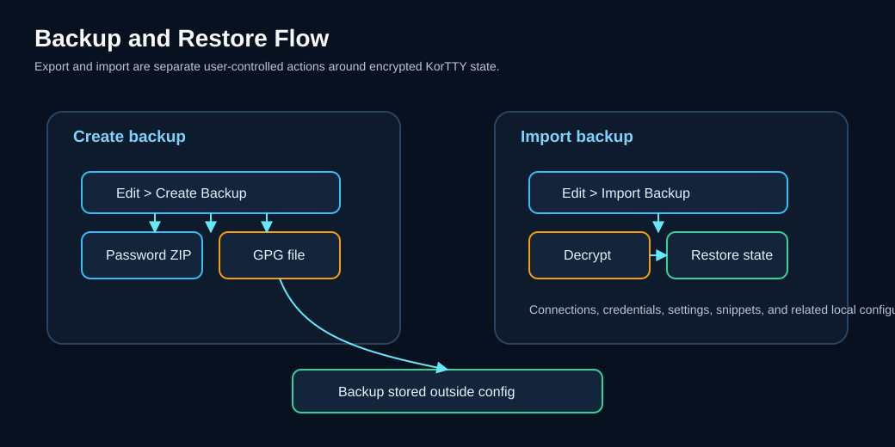

Sichern und Wiederherstellen¶
KorTTY erstellt verschlüsselte Backups aller Ihrer Einstellungen, Verbindungen, Anmeldeinformationen und SSH-Schlüssel. Verwenden Sie Sicherung und Wiederherstellung, um Ihre Konfiguration zu schützen oder sie zwischen Computern zu verschieben.

Eigenschaften¶
- Verschlüsselte Backups – Alle Backups werden entweder mit passwortgeschützter ZIP- oder GPG-Verschlüsselung verschlüsselt
- Konfigurationssicherung – Enthält Verbindungen, Anmeldeinformationen, SSH/GPG-Schlüssel, vertrauenswürdige interaktive SSH-Hostschlüssel, globale Einstellungen, JobScheduler-Konfiguration, Snippets, AI-Chat-Verlauf, lokale Modellregistrierungen und Wissensspeicher-Quellenmetadaten
- Regenerierbare lokale KI-Daten ausgeschlossen – GGUF-Gewichte, native llama.cpp-Laufzeiten, signierter Katalog-Cache, temporäre Sidecar-Dateien und HNSW-Snapshots werden absichtlich nicht in das Archiv kopiert
- Projektverzeichnis – Alle gespeicherten Projektarbeitsbereiche sind in der Sicherung enthalten
- Automatische Rotation – Alte Backups werden automatisch mit Zeitstempeln in ein
old-backups-Unterverzeichnis verschoben - Konfigurierbare Aufbewahrung – Legen Sie eine maximale Anzahl der aufzubewahrenden Backups fest (0 = unbegrenzt; älteste Backups werden automatisch gelöscht)
- Importieren/Wiederherstellen – Wiederherstellung von zuvor erstellten Backups mit optionaler Überschreibkontrolle
- Flexible Entschlüsselung – Sowohl passwortverschlüsselte ZIP- als auch GPG-verschlüsselte Formate werden für den Import unterstützt
Erstellen eines Backups¶
- Öffnen Sie Bearbeiten → Backup erstellen... oder drücken Sie Ctrl+Shift+B (Befehl+Umschalt+B unter macOS)
- Wählen Sie ein Zielverzeichnis für die Sicherungsdatei
- Das Backup wird mit der unter Einstellungen → Backup konfigurierten Verschlüsselungsmethode erstellt.
KorTTY nennt das aktuelle Backup kortty-backup.zip im Zielverzeichnis. Wenn dort bereits ein Backup vorhanden ist, wird es automatisch in ein old-backups-Unterverzeichnis mit angehängtem Zeitstempel rotiert (z. B. kortty-backup_2025-06-24_14-30-45.zip).
Das Backup umfasst:
| Artikel | Details |
|---|---|
| Verbindungen | Alle gespeicherten SSH-Verbindungen und Gruppen |
| Anmeldeinformationen | Gespeicherte Benutzernamen und Passwörter (verschlüsselt) |
| SSH-Schlüssel | Schlüsselreferenzen mit verschlüsselten Passphrasen sowie die kopierten Schlüsseldateien in ~/.kortty/ssh-keys/ |
| Vertrauenswürdige interaktive Hosts | ssh-host-keys.properties, gemeinsam genutzt von Terminal, SFTP und dem Mosh SSH-Bootstrap; der Vergängliche .lock Begleiter ist nicht im Lieferumfang enthalten |
| GPG-Schlüssel | Öffentliche GPG-Schlüssel für die Backup-Verschlüsselung |
| Einstellungen | Globale Anwendungseinstellungen, Terminalkonfigurationen, Themen und AI-Profile |
| JobScheduler-Jobs | Alle geplanten Jobs, Hostschlüssel-Pins und verschlüsselten Sudo-Passwörter |
| Snippets | Code-Snippets und Skriptvorlagen mit Metadaten |
| Snippet-Variablen | Benutzerdefinierte Variablen für die Snippet-Ersetzung |
| KI-Chats | Gespeicherte KI-Gesprächsverläufe und -Profile |
| Lokale KI-Konfiguration | Lokale GGUF-Registrierungen und eingegebene Starteinstellungen, Text-/Codierungsrollen, bevorzugte Laufzeit-Backend-/Update-Richtlinie und verschlüsseltes Hugging Face-Token |
| Wissensspeicherkonfiguration | Speichermetadaten und Quellpfade, Filter, Synchronisierungsmodi und Einbettungskonfiguration; nicht die HNSW-Vektoren |
| Projekte | Alle .kortty Projektarbeitsbereichsdateien |
Backup-Verschlüsselung¶
Passwortgeschützte ZIP-Datei (Standard)¶
- Öffnen Sie Einstellungen → Backup
- Wählen Sie Verschlüsselungstyp: Passwort
- Wählen oder erstellen Sie Anmeldeinformationen, die als Verschlüsselungskennwort verwendet werden sollen
- Optional Maximale Backups festlegen (0 = unbegrenzt)
- Speichern
Passwortgeschützte Backups werden mit AES-256 verschlüsselt (über die zip4j-Bibliothek); Das Passwort der Anmeldeinformationen verschlüsselt alle Dateien im Archiv. Mit älteren korTTY-Versionen erstellte Backups verwendeten die veraltete ZIP-Verschlüsselung und können weiterhin importiert werden – die Entschlüsselungsmethode wird aus dem Archiv selbst gelesen. Beachten Sie, dass AES-verschlüsselte ZIPs ein AES-fähiges Tool (7-Zip, WinZip, unzip 6+) benötigen, wenn Sie jemals eines außerhalb von korTTY extrahieren.
GPG-Verschlüsselung¶
- Öffnen Sie Einstellungen → Backup
- Wählen Sie Verschlüsselungstyp: GPG
- Wählen Sie einen GPG-Schlüssel aus GPG-Schlüssel verwalten...
- Optional Maximale Backups festlegen (0 = unbegrenzt)
- Speichern
GPG-Backups verschlüsseln die Backup-Datei mit dem öffentlichen Schlüssel Ihres ausgewählten GPG-Schlüssels. KorTTY erstellt zunächst eine temporäre ZIP-Datei, verschlüsselt sie dann mit gpg --encrypt und speichert die Datei .gpg. Die temporäre ZIP-Datei wird nach der Verschlüsselung sicher gelöscht.
Tip
Wenn Sie noch keine GPG-Schlüssel eingerichtet haben, verwenden Sie Verwaltung → GPG-Schlüssel verwalten..., um Schlüssel aus Ihrem Systemschlüsselbund zu importieren oder sie manuell hinzuzufügen.
Ein Backup wird importiert¶
- Öffnen Bearbeiten → Backup importieren...
- Wählen Sie eine Sicherungsdatei (
.zipoder.gpg) - Wenn die Sicherung passwortgeschützt ist, geben Sie das Passwort ein, wenn Sie dazu aufgefordert werden
- Wählen Sie aus, ob vorhandene Dateien überschrieben werden:
- Überprüft – Sicherungsdateien ersetzen alle vorhandenen Dateien in Ihrer Konfiguration
- Ungeprüft – Vorhandene Dateien werden übersprungen; Es werden nur fehlende Dateien importiert
- Klicken Sie auf Importieren
- Starten Sie die Anwendung neu, damit alle Änderungen wirksam werden
Warning
Durch das Importieren eines Backups mit aktiviertem Überschreiben werden Ihre aktuellen Einstellungen, Verbindungen und Anmeldeinformationen ersetzt. Wenn Sie sich nicht sicher sind, deaktivieren Sie diese Option, um das Backup zusammenzuführen, ohne es zu überschreiben.
Inhalt der Sicherungsdatei¶
Sowohl .zip- als auch .gpg-Backups enthalten dieselben Dateien:
connections.xml– Alle SSH-Verbindungen und -Gruppencredentials.xml– Gespeicherte Anmeldeinformationen (immer noch mit Ihrem Master-Passwort verschlüsselt)ssh-keys.xml– SSH-Schlüsselreferenzen und verschlüsselte Passphrasenssh-keys/– Kopierte SSH-Schlüsseldateien (nur Schlüssel, die Sie über In Benutzerverzeichnis kopieren dort platziert haben; Schlüssel, auf die an ihren ursprünglichen Speicherorten verwiesen wird, werden nicht erfasst). Wiederhergestellte Schlüsseldateien erhalten nur Besitzerberechtigungen und ein Import wird zusammengeführt – bereits vorhandene Schlüssel werden nie gelöscht oder, ohne Überschreiben, ersetztssh-host-keys.properties– Vertrauenswürdige öffentliche Hostschlüssel für interaktive Terminal-, SFTP- und Mosh-Bootstrap-Verbindungen (ssh-host-keys.properties.lockist absichtlich ausgeschlossen)gpg-keys.xml– öffentliche GPG-Schlüsselglobal-settings.xml– Anwendungseinstellungen, Themen, AI-Profile, Terminal-Standardeinstellungenjob-scheduler.xml– JobScheduler-Jobs, Host-Key-Pins, verschlüsselte Sudo-Passwörtersnippets.xml– Codeausschnitte und Vorlagensnippet-variables.xml– Benutzerdefinierte Snippet-Variablenai-chats.xml– Gespeicherte KI-Gesprächemaster.key– Hash Ihres Master-Passworts (zur Überprüfung beim Import)llm/models.xml– Lokale GGUF-Registrierungen und Laufzeiteinstellungen (Modellgewichte sind nicht enthalten)rag/stores.json– Wissensspeicher- und Quellkonfiguration (Vektor-Snapshots sind nicht enthalten)projects/– Alle gespeicherten Projektarbeitsbereichsdateien (.kortty)
Note
Alle Passwörter und Anmeldeinformationen im Backup bleiben mit Ihrem Master-Passwort verschlüsselt. Wenn Sie ein Backup importieren, müssen Sie das Hauptkennwort für KorTTY entsperren, um die Anmeldeinformationen zu entschlüsseln.
Erstellen Sie lokale KI-Assets nach einer Wiederherstellung neu
Die Sicherung schließt llm/models/-, llm/runtime/-, llm/catalog/-, llm/run/- und lokale index.hnsw-Snapshots aus. Stellen Sie nach dem Wechsel auf einen anderen Computer die GGUF-Dateien und eine kompatible Laufzeit wieder her oder laden Sie sie herunter, verbinden Sie alle externen Modell-/Quellpfade erneut und führen Sie dann Jetzt aktualisieren in jedem Wissensspeicher aus, um seinen Index neu zu generieren. Der signierte Katalogcache wird automatisch aktualisiert oder greift auf den Bootstrap zurück. Originalquelldokumente und externe Qdrant-Daten sind nicht Teil einer korTTY-Konfigurationssicherung.
Backup-Aufbewahrung und -Bereinigung¶
Wenn Sie ein neues Backup in einem Verzeichnis erstellen, das bereits eines enthält, führt KorTTY Folgendes aus:
- Erstellt das neue Backup als
kortty-backup.zip - Verschiebt die vorhandene Sicherung nach
old-backups/kortty-backup_<timestamp>.zip - Wenn die Anzahl der alten Backups Maximale Backups überschreitet, werden die ältesten gelöscht
Um unbegrenzt alte Backups aufzubewahren, stellen Sie Maximale Backups unter Einstellungen → Backup auf 0 ein. Um nur das aktuelle Backup zu behalten, legen Sie Maximale Backups auf 1 fest (alte Backups werden weiterhin rotiert, dann aber sofort gelöscht).
Verwenden von Backups auf mehreren Maschinen¶
- Exportieren Sie Ihre aktuelle Konfiguration:
-
Öffnen Sie auf Computer A Bearbeiten → Backup erstellen... und speichern Sie es auf einem USB-Laufwerk oder einem Cloud-Speicher
-
Sicherungsdatei verschieben:
-
Kopieren Sie
kortty-backup.zip(oder.gpg) auf Maschine B -
Import auf der neuen Maschine:
- Öffnen Sie auf Computer B Bearbeiten → Backup importieren...
- Wählen Sie die Sicherungsdatei aus Schritt 2 aus
- Geben Sie das Backup-Passwort ein, wenn Sie dazu aufgefordert werden
- Lassen Sie Überschreiben deaktiviert, es sei denn, Sie möchten vorhandene Verbindungen ersetzen
- KorTTY neu starten
Alle gesicherten Verbindungen, Einstellungen, Snippets, gespeicherten Chats, interaktive Hostschlüssel-Vertrauensentscheidungen, Modellregistrierungen und Wissensquellendefinitionen sind auf Maschine B verfügbar. Wiederhergestellte Hostschlüssel werden weiterhin mit dem normalisierten Hostnamen und Port abgeglichen, sodass ein geänderter Schlüssel nach der Migration blockiert bleibt. Lokale Modellgewichte, Laufzeitpakete, Quelldokumente und HNSW-Vektoren müssen separat wiederhergestellt oder neu generiert werden.
Fehlerbehebung¶
- "Sicherungsdatei nicht gefunden"
- Überprüfen Sie, ob der Dateipfad korrekt ist und die Datei vorhanden ist. Überprüfen Sie die Verzeichnisberechtigungen.
- „Passwort für passwortverschlüsseltes Backup erforderlich“
- Passwortgeschützte Backups benötigen das richtige Passwort. Stellen Sie sicher, dass Sie das Anmeldepasswort (aus Einstellungen → Sicherung) und nicht Ihr Master-Passwort eingeben.
- „GPG-Schlüssel nicht gefunden“
- Der zur Verschlüsselung verwendete GPG-Schlüssel fehlt. Verwenden Sie Verwaltung → GPG-Schlüssel verwalten..., um den Schlüssel zu importieren oder hinzuzufügen, und versuchen Sie es dann erneut.
- „Kein Passwort für Backup-Verschlüsselung ausgewählt“ oder „Kein GPG-Schlüssel ausgewählt“
- Konfigurieren Sie unter Einstellungen → Backup ein Passwort oder einen GPG-Schlüssel, bevor Sie ein Backup erstellen.
- Der Import war erfolgreich, aber die Änderungen wurden nicht wirksam
- Starten Sie KorTTY neu, damit importierte Einstellungen aktiv werden. Wenn Sie Anmeldeinformationen importiert haben, müssen Sie nach dem Neustart möglicherweise auch das Master-Passwort entsperren.
- Sicherungsdatei ist größer als erwartet
- Große Backups können auftreten, wenn Sie viele gespeicherte AI-Chats oder ein großes Projektverzeichnis haben. GGUF-Gewichte, llama.cpp-Laufzeitpakete und HNSW-Snapshots sind ausgeschlossen und können nicht die Ursache sein.